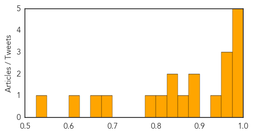

Measles
30-Day Web Trend
2 alerts, 6 warnings

30-Day Twitter Trend
0 alerts, 0 warnings

Article Locations

Article Confidences
Top Articles:
- 0.996
- At Least 108 Children Dead in Measles Flare-Up in Vietnam
- 0.996
- Another Measles Case Confirmed, Now 26 Affected by NYC Outbreak
- 0.990
- Measles cases in NYC grows to 26
- 0.984
- Disease risk increases with holiday travel
- 0.982
- Disease risk increases with holiday travel - DHB
- 0.972
- NYC Health Commissioner On Measles Outbreak: 'We Must Continue To Remain Vigilant'
- 0.965
- Vietnam ministry quadruples child mortality from measles to at least 108, epidemic declaration pending
- 0.963
- Could an Oral Measles Drug Help the Unvaccinated?
- 0.945
- Vietnam: measles death toll reaches 108
- 0.890
- Experimental drug offers promise in fight against measles
- 0.884
- Experimental drug offers promise in fight against measles - World
- 0.868
- Deputy PM orders best conditions for measles patients
- 0.844
- The top five travel illnesses (and how to avoid them)
- 0.841
- Measles cases reach 7,000 this year
- 0.807
- Lawrence Solomon: The untold story of measles
- 0.797
- Vaccine scare blamed on sensationalised coverage
- 0.676
- Martha’s Vineyard students lag in required vaccinations
- 0.655
- Protect your family from measles
- 0.621
- World: Experimental drug offers promise in fight against measles
- 0.541
- Mom Whose Child Died After Catching Chicken Pox Advocates for Vaccines
Top Tweets:
-
No tweets found for Apr 16, 2014
Mumps
30-Day Web Trend
5 alerts, 7 warnings

30-Day Twitter Trend
0 alerts, 0 warnings

Article Locations

Article Confidences

Top Articles:
- 0.987
- Mumps continues to spread in Ohio and Wisconsin
- 0.982
- No Shots, No School Amid Ohio Mumps Outbreak
- 0.941
- Health Officials Request Unvaccinated Children Stay Home From School in Formal Statement
- 0.913
- Mumps Cases Top 230 In Central Ohio
- 0.890
- No school recommended for kids without mumps vaccinations in central Ohio
- 0.811
- WFMJ.com News weather sports for Youngstown-Warren Ohio
- 0.784
- No school recommended for unvaccinated kids
Top Tweets:
-
No tweets found for Apr 16, 2014